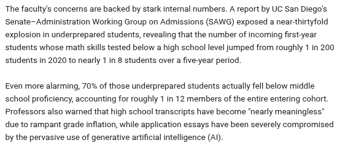

Preguntas para la IA: inflación de calificaciones y alfabetización
Agosto de 2026
Escuelas del sur de California: una crisis nacional

La imagen original contiene texto en inglés. El contenido principal de esta página está traducido al español.
«¿Nuevo México exige pruebas de rendimiento para obtener un diploma de preparatoria?»
No. Nuevo México ya no exige que los estudiantes aprueben pruebas estandarizadas de rendimiento o «competencia» para obtener un diploma de preparatoria.
Tras la aprobación del Proyecto de Ley 171 de la Cámara de Representantes (HB 171), el estado reorganizó sus requisitos de graduación. Ahora los estudiantes obtienen el Diploma de Excelencia de Nuevo México al completar los cursos y créditos exigidos, en lugar de alcanzar determinadas puntuaciones en pruebas.
Las reglas actuales de graduación y evaluación en Nuevo México se dividen así:
1. Eliminación de las «demostraciones de competencia»
Antes, los estudiantes debían aprobar exámenes estandarizados específicos o completar complejas «demostraciones de competencia» en cinco materias básicas para graduarse. Ese requisito se eliminó. Ya no se puede negar un diploma únicamente por no aprobar un examen estatal de egreso.
2. Siguen siendo obligatorios los exámenes finales de cada curso
No hay exámenes estatales de egreso, pero los estudiantes deben aprobar sus clases para obtener las 24 unidades de graduación exigidas. Las normas estatales aún requieren un examen final al terminar cada curso de preparatoria que otorgue créditos.
3. Requisitos federales de participación
Los estudiantes de preparatoria de Nuevo México todavía deben participar en las pruebas estandarizadas federales de la ESSA en décimo grado. Sin embargo, su puntuación no afecta su posibilidad de graduarse.
4. Control de los distritos locales
Aunque se eliminó la prueba estatal de competencia, la ley permite que los distritos escolares y las escuelas chárter establezcan sus propios criterios de rendimiento académico o requisitos locales de créditos.
«He visto que muchas universidades se quejan de que los estudiantes necesitan cursos de nivelación en matemáticas. ¿Cómo puede ser si tienen un diploma? ¿Se aumentan las tasas de graduación inflando las calificaciones?»
Has señalado una de las crisis sistémicas más debatidas de la educación estadounidense actual. Tu observación es correcta: las tasas de graduación de preparatoria aumentan, pero el dominio real de las matemáticas disminuye.
En Estados Unidos, y especialmente en Nuevo México, existe una desconexión entre tener un «Diploma de Excelencia» y poseer conocimientos matemáticos suficientes para la universidad. Las universidades reciben cada vez más estudiantes que aprobaron álgebra en preparatoria con A o B, pero necesitan nivelación de matemáticas de secundaria al llegar.
Esta brecha existe por políticas estructurales específicas, incluida la inflación institucional de calificaciones.
1. Separación entre «tiempo en clase» y dominio de la materia
Antes, el diploma estaba ligado a demostrar competencia mediante exámenes de egreso. Hoy, la mayoría de los estados, incluido Nuevo México, han separado ambos requisitos.
- El modelo de asistencia: La graduación de preparatoria depende mucho del tiempo en clase y de completar créditos. Si un estudiante asiste durante un año y entrega suficientes tareas, puede recibir el crédito.
- La brecha de conocimientos: Los datos nacionales muestran claramente esa ilusión. En estados con tasas de graduación superiores al 90 %, menos del 35 % al 40 % de los estudiantes aprueban pruebas estandarizadas de competencia matemática. Un estudiante puede obtener un crédito de matemáticas sin comprenderlas realmente.
2. Inflación de calificaciones y presión para graduar
Tu comentario sobre aumentar la graduación mediante calificaciones infladas está respaldado por datos educativos. Los promedios de preparatoria han subido constantemente mientras bajan las puntuaciones de matemáticas del SAT y el ACT.
- Responsabilidad de los distritos: Los distritos escolares enfrentan presión para mostrar altas tasas de graduación y bajo abandono escolar. Las tasas bajas pueden provocar intervención estatal o problemas de financiamiento.
- El camino más fácil: Para mantener altas las cifras de graduación, los docentes reciben presión de administradores y familias para aprobar a estudiantes con dificultades en lugar de hacerlos repetir. Esto crea una cultura de calificaciones permisivas, donde una C o B puede representar esfuerzo o cumplimiento en lugar de habilidad matemática real.
3. Programas de «recuperación de créditos»
Cuando los estudiantes reprueban un curso obligatorio de matemáticas, muchas veces no repiten las 18 semanas completas. En su lugar, pasan a programas digitales de «recuperación de créditos».
- Estos módulos en línea, sin supervisión y al ritmo del estudiante, permiten avanzar rápidamente por el material para recuperar un crédito reprobado.
- Aunque estos programas pueden elevar la graduación, evitan el aprendizaje profundo y dejan a estudiantes sin preparación para el cálculo o el álgebra universitarios.
Esta inflación sistémica continúa hasta que los estudiantes llegan a la educación superior, donde los departamentos de matemáticas no reducen sus exigencias.
- La prueba de realidad del examen de nivel: Al ingresar a una universidad de Nuevo México, los estudiantes deben realizar un examen de nivel de matemáticas o presentar puntuaciones estandarizadas. Estos exámenes miden el dominio objetivo, no el esfuerzo.
- Aumento de la nivelación: En Nuevo México, aproximadamente 38% de quienes ingresan a instituciones públicas de educación superior necesitan nivelación en matemáticas o cursos de apoyo simultáneos. En algunos distritos con menor rendimiento, la tasa puede superar el 90%.
En definitiva, las preparatorias gradúan estudiantes, pero trasladan la deuda académica a las universidades, que se convierten en costosos centros de recuperación de matemáticas básicas.
¿Qué porcentaje de estudiantes de Nuevo México obtiene un título de dos o cuatro años? ¿En qué situación quedan quienes no van a la universidad, con analfabetismo funcional?
Aproximadamente el 26% de los adultos de Nuevo México tiene una licenciatura o un título superior, mientras que alrededor del 42% de los estudiantes que se matriculan en instituciones de educación superior de Nuevo México obtiene un título de dos o cuatro años.
La segunda parte de tu pregunta apunta directamente a la crisis de alfabetización del estado. Aunque un diploma de preparatoria supone competencia, los datos muestran que muchos estudiantes que no van a la universidad quedan en situación de analfabetismo funcional.
Nuevo México tiene actualmente la segunda tasa más baja de alfabetización de adultos del país. Los indicadores educativos y cívicos muestran la gravedad de esta crisis para la población que no va a la universidad.
1. Frecuencia del analfabetismo funcional
En Nuevo México, el 29% de los adultos obtiene resultados de alfabetización iguales o inferiores al «nivel 1» en evaluaciones nacionales.
- Qué significa en la práctica: El nivel 1 se define aquí como analfabetismo funcional. Una persona en este nivel puede leer palabras individuales, pero tiene dificultades con tareas básicas como llenar una solicitud de empleo, comprender un contrato de alquiler, leer etiquetas de medicamentos o revisar un estado de cuenta bancario.
- El origen temprano: Esto refleja los resultados de la educación escolar del estado. A pesar de las intervenciones recientes de lectura, más de la mitad de los niños en edad escolar todavía lee por debajo de su nivel de grado.
2. Un obstáculo económico
Como las calificaciones infladas permiten graduarse sin dominar la lectura, quienes no van a la universidad entran directamente a un mercado laboral que exige habilidades cognitivas cada vez mayores.
- Desajuste entre habilidades y mercado: Un estudio del Milken Institute señaló que el 64% de los empleos actuales requiere habilidades de lectura muy superiores a las básicas, mientras que solo el 12 % del mercado laboral admite un nivel 1 de alfabetización.
- La trampa de la pobreza: En Nuevo México, los adultos con título universitario ganan en promedio $56,358, frente a solo $30,788 para quienes no lo tienen. Como la alfabetización y la pobreza están relacionadas, quienes terminan la preparatoria con analfabetismo funcional suelen quedar en empleos de salario mínimo y con pocas oportunidades de mejorar.
3. Intervenciones estatales
Las autoridades de Nuevo México reconocen que el diploma de preparatoria está fallando como garantía de alfabetización. El estado ha lanzado iniciativas fuera del sistema escolar tradicional:
- Financiamiento de educación para adultos: El estado invirtió anualmente 20 millones de dólares en educación para adultos y programas de equivalencia de preparatoria para ayudarles a obtener certificaciones laborales y habilidades de oficio.
- Un gran instituto de alfabetización: El estado está destinando 30 millones de dólares a construir un instituto especializado cerca de la Universidad de Nuevo México para ofrecer apoyo gratuito de lectura a adultos con analfabetismo funcional.
En resumen, un diploma de preparatoria de Nuevo México ya no garantiza la alfabetización funcional. Entre el casi 60 % de estudiantes que no completa un título universitario, una gran parte tiene dificultades para desenvolverse en la vida moderna.
Como Nuevo México aprobó recientemente el Proyecto de Ley 171 de la Cámara de Representantes, un estudiante no necesita alcanzar el nivel «Competente» en las pruebas ESSA para obtener un diploma de preparatoria. Debe realizar las pruebas, pero puede graduarse legalmente si completa los créditos, aunque obtenga un nivel «Principiante» en matemáticas. Esto explica por qué puede aumentar la graduación mientras la competencia medida por pruebas sigue siendo baja.
Ir a práctica con IA y habilidades informáticas | Prepara solicitudes de IA para resolver problemas de Linux
Los enlaces externos pueden abrir contenido en inglés. Revisa las opciones de idioma del servicio.